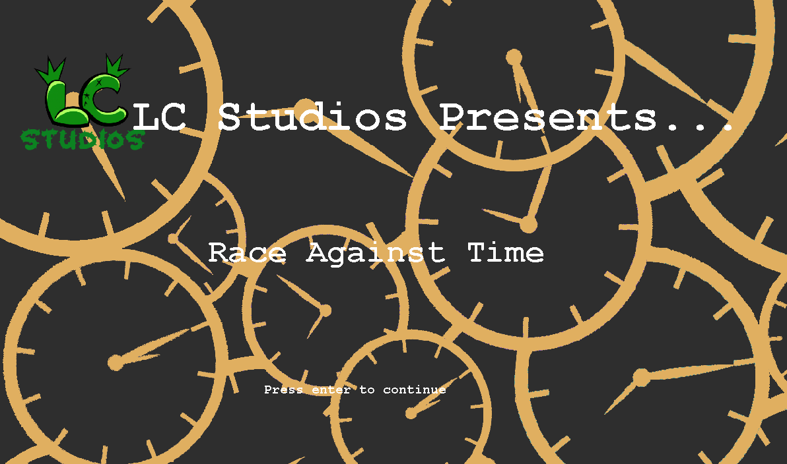

About
Hi, I'm Lukas. I'm a grade 11 student at William Lyon Mackenzie Collegiate Institute taking the ICS4U0 course.
I started coding in the summer of grade 6 with Python, but never really got into it as it just seemed too confusing and convoluted to me back then.
However, ever since I got into William Lyon Mackenzie, I realized that it was actually much easier to get into coding than I had previously thought.
Through the help of computer science courses and friends who were much more knowledgable than me, I managed to pick up new languages such as Java and C++.
I also got into cybersecurity and learned about database languages such as SQL.
Apart from computer science, my other passions include things like math and the sciences, mainly biology. I hope to get into biotechnology in the future, and am
currently reading up on things like cell biology, biochemistry, and botany to prepare for the Canadian Biology Olympiad, the largest biology competition in Canada.

Some Things About Me
- Birthday: February 7th, 2007
- City: Toronto, Ontario, Canada
- Age: 16
- Email: lukas.li@student.tdsb.on.ca
- Languages: Python, Java, C++
- Hobbies: Video Games, Origami
Projects
Race Against Time
A game I worked on with Alex Zhu for my ICS4U0 culminating.
It is about about overcoming procrastination and features 3 levels, each with a different theme:
Level 1 - 'Learning': The player is given a scenario and has to choose between 2 choices, only one of which right
course of action in the given scenario. There are four scenarios in total, and a helpful bit of information
will be displayed after each scenario.
Level 2 - 'Testing': The player uses the arrow keys to move a character around a maze. There are different items
scattered around the maze, and the character has to collect them all in order to escape the maze. There
is also a time limit of 150 seconds, and the player has to solve the maze before the time runs out.
Level 3 - 'Action': There are a number of different items scattered around a table, and the player must sort them
into 2 different boxes - school related and non school-related items. The player controls the character's
hand using the arrow keys, presses space to grab an item, and space again to drop the item.
Our GitHub page
Bibliography
Data Structures
Arrays
- GeeksforGeeks. (2023, April 3). What is array? GeeksforGeeks. Retrieved April 10, 2023, from https://www.geeksforgeeks.org/what- is-array/
- Java arrays. Programiz. (n.d.). Retrieved April 10, 2023, from https://www.programiz.com/ java-programming/arrays
ArrayLists
- GeeksforGeeks. (2023, March 24). Arraylist. contains() in Java. GeeksforGeeks. Retrieved April 11, 2023, from https://www.geeksfor geeks.org/arraylist-contains-java/
- GeeksforGeeks. (2023, March 27). Arraylist in Java. GeeksforGeeks. Retrieved April 11, 2023, from https://www.geeksforgeeks.org/ arraylist-in-java/
- Java arraylist class. Tutorials Point. (n.d.). Retrieved April 11, 2023, from https://www .tutorialspoint.com/java/util/java_util_arr aylist.htm
OOP
Objects/Classes
- GeeksforGeeks. (2023, March 24). Classes and objects in Java. GeeksforGeeks. Retrieved April 12, 2023, from https://www.geeksfor geeks.org/classes-objects-java/
- Java Classes and Objects. Java classes and objects. (n.d.). Retrieved April 12, 2023, from https://www.w3schools.com/java/java_ classes.asp
Inheritance and Polymorphism
- Java inheritance. Java Inheritance (Subclass and Superclass). (n.d.). Retrieved April 26, 2023, from https://www.w3schools.com/java/ja va_inheritance.asp
- Java Polymorphism. Java polymorphism. (n.d.). Retrieved April 26, 2023, from https://www.w3 schools.com/java/java_polymorphism.asp
Algorithms
Recursion
- Huang, E. (2021, February 17). Is recursion really slower than iteration? Edward Huang. Retrieved April 21, 2023, from https://edward -huang.com/2021/02/17/is-recursion-really-slo wer-than-iteration/
- Java Recursion. Java recursion. (n.d.). Retrieved April 20, 2023, from https://www.w3 schools.com/java/java_recursion.asp
- MindOrks Nextgen Private Limited. (2019, December 19). What is the difference between iteration and recursion? AfterAcademy. Retrieved April 21, 2023, from https://afteracademy.com/ blog/what-is-the-difference-between-iteration- and-recursion/
- Sebhastian, N. (2022, September 23). What is recursion? A recursive function explained with JavaScript code examples. freeCodeCamp.org. Retrieved April 20, 2023, from https://www.freecode camp.org/news/what-is-recursion-in-javascript
Searching and Sorting
- GeeksforGeeks. (2023, April 19). Selection sort algorithm - data structure and algorithm tutorials. GeeksforGeeks. Retrieved April 24, 2023, from https:// www.geeksforgeeks.org/selection-sort/
- GeeksforGeeks. (2023, April 27). Quicksort. GeeksforGeeks. Retrieved April 27, 2023, from https:// www.geeksforgeeks.org/quick-sort/
- GeeksforGeeks. (2023, April 27). Searching algorithms. GeeksforGeeks. Retrieved April 27, 2023, from https://www.geeksforgeeks.org/searching-algorit hms/
- GeeksforGeeks. (2023, March 21). Sorting algorithms. GeeksforGeeks. Retrieved April 24, 2023, from https://www.geeksforgeeks.org/sorting-algorithms/